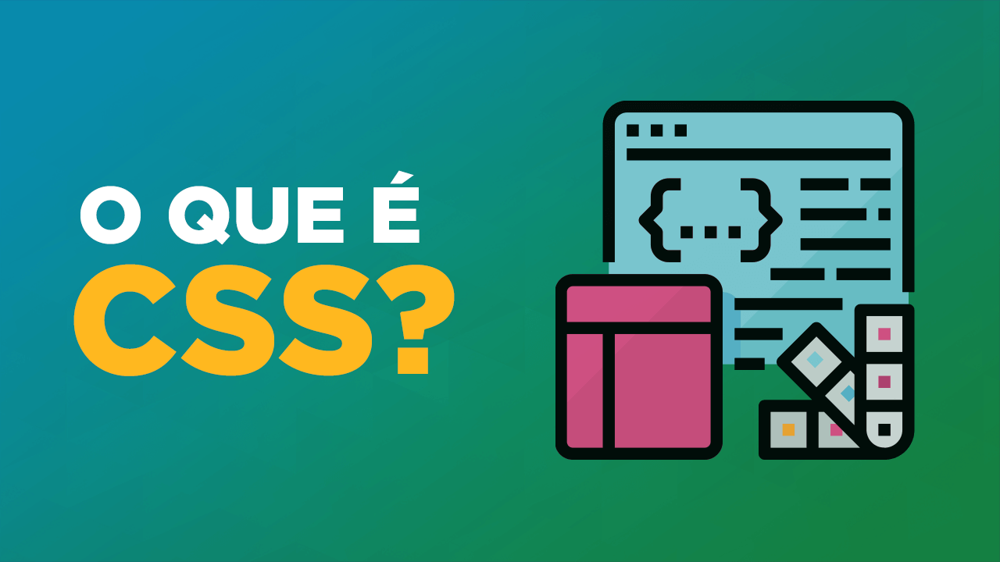

CSS
Linguagem básica para criação de WebSites.
Enquanto o HTML é utilizado para definir o conteúdo e sua estrutura semântica, o CSS é usado para estilizá-lo e desenhá-lo.
Por exemplo, você pode usar o CSS para alterar a fonte, cor, tamanho e espaçamento do seu conteúdo, dividí-lo em multiplas colunas, ou adicionar
animações e outros recursos decorativos.
Para continuar esse artigo, é recomendável você dar uma olhada primeiro na seção HTML.
CSS (Cascading Style Sheets) é usado para estilizar o conteúdo disposto em páginas da Web - por exemplo, para alterar a fonte, cor, tamanho e espaçamento do seu conteúdo, dividi-lo em várias colunas ou adicionar animações e outros recursos decorativos. Acompanhe a seguir um começo suave para compreender o uso CSS com o básico de como ele funciona, como é a sintaxe e como você pode começar a usá-lo para adicionar estilo ao HTML.
SINTAXE
A linguagem CSS funciona através de regras com o principal objetivo de estilizar visualmente o conteúdo HTML da página. Com regras, podemos selecionar um ou mais elementos em uma página e aplicar estilos de acordo. Uma regra é formada de:
- Um ou mais seletores;
- Chaves: { };
- Declarações, cada uma com propriedade e valor (terminando a linha com ";").
No exemplo acima, vemos a seleção das tags p e a aplicação da cor vermelha a todas elas. Ou seja, com esta regra, todos os parágrafos da página ficarão vermelhos.
CÓDIGOS BÁSICOS
A lista de códigos para a estilização com CSS é extensa, porém ao explorarmos e usarmos ele por um tempo, percebemos que alguns códigos são praticamente sempre utilizados, são esses, códigos que envolvem a formação de texto, redimensionamento/posicionamento de objetos, largura e comprimento.
Veja a seguir alguns códigos a respeito da formatação de texto, coloração e sobre largura e comprimento.
- FONT-SIZE: tamanho do texto;
- FONT-FAMILY: fonte do texto/estilo da letra;
- TEXT-ALIGN: determina o alinhamento do texto;
- COLOR: a cor do texto;
- TEXT-SHADOW: cria uma sombra no texto dentro de um elemento;
- BACKGROUND-COLOR: a cor atrás do conteúdo de um elemento e do padding;
- WIDTH: largura de um elemento;
- HEIGHT: comprimento de um elemento.
Abaixo temos um exemplo da utilização desses códigos para todos os parágrafos de um documento HTML, representado pelo seletor "p".
HTML |
| <body> |
| <p> |
| Exemplo de formatação com CSS. |
| </p> |
| </body> |
CSS |
| p{ |
| font-size:25px; |
| text-align:center; |
| font-family:arial; |
| color:red; |
| text-shadow:1px 1px 2px blue;; |
| background-color:lightgrey; |
| width:100%; |
| height:30px; |
| } |
O resultado da programação acima é:
Exemplo de formatação com CSS.
INSERIR DOCUMENTO CSS EM UMA PÁGINA HTML
Para que as regras tenham efeito na página, há três maneiras de inseri-las:
- Arquivo externo “.css” ligado à página HTML através da tag <link> (melhor método);
- Dentro da tag <head> de uma página, utilizando a tag “<style>”
- Dentro de um elemento, utilizando o atributo style
É necessário aplicar seu documento CSS ao seu documento HTML, do contrário, o estilo CSS não irá afetar a maneira como o seu navegador mostra seu documento HTML.
Abra seu arquivo html e cole o seguinte código em algum lugar no cabeçalho, ou seja, entre as tags <head> e :
| [...] |
| <head> |
| <style>color:red;</style> |
| </head> |
| [...] |
| <p style="color:red;">texto do parágrafo aqui.</p> |